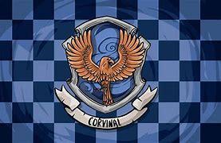

Uma das bruxas mais sábias de todos os tempos, nasceu no mes mo período que Salazar e Godric, em uma filha de mestiços. Antes da fundação da escola, Rowena já era uma grande amiga de Helga Lufa Lufa. A bruxa foi a responsável pela escolha da localização e do nome da escola de Hogwarts. Rowena tinha preferencia por alunos inteligentes e criativos assim como ela, lhes passando a sua sabedoria. Durante o seu período em Hogwarts, a bruxa chegou a dar aula para sua própria filha, Helena Ravenclaw. Helena havia se tornado extremamente ambiciosa, e roubou o diadema de sua mãe, desejando se tornar mais inteligente do que ela, através da magia do objeto. Antes de morrer de desgosto, Rowena enviou um barão chamado Nicolas, que era apaixonado por sua filha. Ele encontra Helena, que se recusa a voltar com ele. O barão se enfurece, e mata Helena, e tomado pela culpa, se mata logo em seguida. Assim, os dois espiritos retornam para o castelo, na forma de Nick Quase Sem Cabeça, habitando a Sonserina, e Helena a Corvinal.
